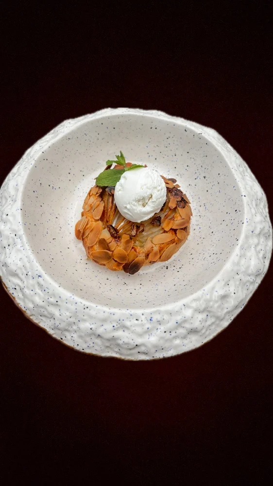
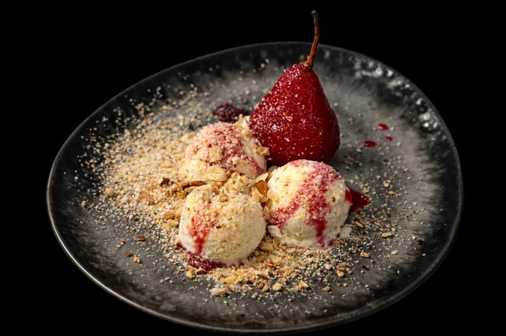
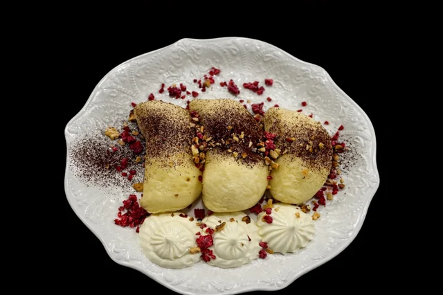
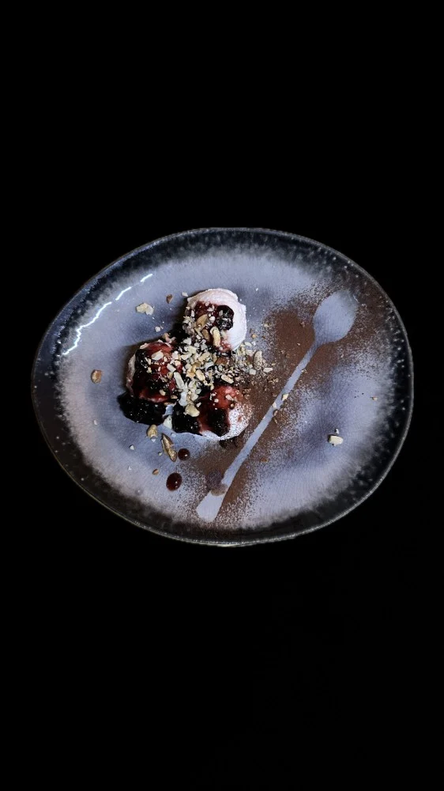

Кафе "Villa Maria"
Ми - твоє улюблене місце для смачних перерв
Зображення наших десертів:




Ось посилання на проготування нашого найсмачнішого десерту галета з грушею в виконанні Клопотенка:
НАЖМИ ТУТ| Десерт | Ціна | Продано | Статус |
|---|---|---|---|
| Морозиво з карамелізованою грушею | 120 грн | 45 | Хіт |
| Сорбет із сезонними фруктами | 95 грн | 30 | Популярно |
| Вареники на пару | 110 грн | 25 | Замовляють рідше |
| Галета з грушею | 140 грн | 50 | Найкращий результат |